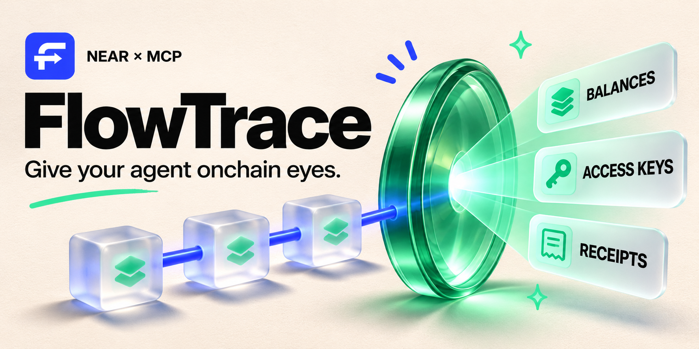

先了解一笔资产
- 填写公开NEAR账户。
- 读取余额、公钥和final区块。
- 保留未知项，下载报告复核。
一句话查账户，看余额和权限怎么变。
后台留意账户变化，查收款、做转账预检。

先填好公开案例，点击查询才读取主网。
NEAR主网是正式运行的公共账本，账户、余额和交易都是真实的。这里的服务器通过RPC按需读取数据，不需要你充值、质押或连接钱包。测试网使用测试代币；本地实验网由你自己运行，数据不会变成主网资产。
当前支持NEAR及USDC、USDT、wNEAR查询、FT收据核验和转账规则预检。预检只生成未签名模板，尚未接入钱包签名、资金执行或自动套利。后台观察需单独开启，按周期比较快照并记录站内事件。
约每3分钟核对余额、公钥与代码变化。关闭网页后，服务器仍会在观察有效期内继续采集；重新打开，就能查看站内事件。
每个会话保留最近100条事件，时间为北京时间。观察的是两个快照的净变化，不是完整流水或被盗判定；查询失败会保留未知。当前不发送邮件、短信或外部通知。
结果会包含数据来源、区块锚点、检查项与执行记录。
官网要求提交公开代码仓库和包含视频或截图的X演示帖子。这里整理材料，由你在官网填写团队信息并完成提交。
截止：读取官方规则快照…
打开官方报名／提交入口 ↗建议优先考虑 AI Security & Defense：让Agent的每次链上操作先有证据、再做预检。收款排查也可考虑 Real-World Money。最终赛道由你决定。
源码已公开；X 演示帖及比赛报名尚未完成。
兼容 Streamable HTTP 与本机 stdio。由你的 Agent 选择工具并理解结果。
一次请求执行账户检查、变化核对、收款排查或转账预检，返回步骤记录与结构化结果。
POST ../api/agent/run
{"task":"account_inspect",
"input":{"accountId":"wrap.near"}}查看工具与输入 Schema ↗告诉 Agent 什么时候调用工具、如何解释权限、怎样保留未知状态与签名边界。